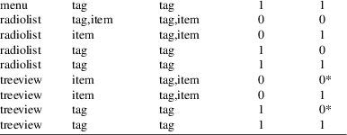

dialog − widgets and utilities for the dialog program
cc [ flag
... ] file ... −ldialog [ library ... ]
or
cc $(dialog−config −−cflags) file ...
$(dialog−config −−libs) ]
#include <dialog.h>
Dialog is a program that will let you present a variety of questions or display messages using dialog boxes from a shell script. It is built from the dialog library, which consists of several widgets as well as utility functions that are used by the widgets or the main program.
This manpage documents the features from <dialog.h> which are likely to be important to developers using the widgets directly. Some hints are also given for developing new widgets.
Here is a dialog version of Hello World:
int main(void)
{
|
int status; |
||||
|
init_dialog(stdin, stdout); |
||||
|
status = dialog_yesno( |
||||
|
"Hello, in dialog−format", | ||||
|
"Hello World!", | ||||
|
0, 0); | ||||
|
end_dialog(); |
||||
|
return status; |
}
Exit codes (passed back to the main program for its use) are defined with a "DLG_EXIT_ prefix. The efined constants can be mapped using environment variables as described in dialog(1), e.g., DLG_EXIT_OK corresponds to $DIALOG_OK.
Useful character constants which correspond to user input are named with the "CHR_" prefix, e.g., CHR_BACKSPACE.
Colors and video attributes are categorized and associated with settings in the configuration file (see the discussion of $DIALOGRC in dialog(1)). The DIALOG_ATR(n) macro is used for defining the references to the combined color and attribute table dlg_color_table[].
The dialog application passes its command-line parameters to the widget functions. Some of those parameters are single values, but some of the widgets accept data as an array of values. Those include checklist/radiobox, menubox and formbox. When the −−item−help option is given, an extra column of data is expected. The USE_ITEM_HELP(), CHECKBOX_TAGS, MENUBOX_TAGS and FORMBOX_TAGS macros are used to hide this difference from the calling application.
Most of the other definitions found in <dialog.h> are used for convenience in building the library or main program. These include definitions based on the generated <dlg_config.h> header.
All of the global data for the dialog library is stored in a few structures: DIALOG_STATE, DIALOG_VARS and DIALOG_COLORS. The corresponding dialog_state, dialog_vars and dlg_color_table global variables should be initialized to zeros, and then populated with the data to use. A few of these must be nonzero for the corresponding widgets to function. As as the case with function names, variables beginning with "dialog_" are designed for use by the calling application while variables beginning with "dlg_" are intended for lower levels, e.g., by the dialog library.
The state variables are dialog’s working variables. It initializes those, uses them to manage the widgets.
.all_subwindows
This is a linked list of all subwindows created by the
library. The dlg_del_window function uses this to
free storage for subwindows when deleting a window.
.all_windows
This is a linked list of all windows created by the library.
The dlg_del_window function uses this to locate
windows which may be redrawn after deleting a window.
.aspect_ratio
This corresponds to the command-line option
"−−aspect−ratio". The
value gives the application some control over the box
dimensions when using auto sizing (specifying 0 for height
and width). It represents width / height. The default is 9,
which means 9 characters wide to every 1 line high.
.finish_string
When set to true, this allows calls to
dlg_finish_string to discard the corresponding data
which is created to speed up layout computations for the
given string parameter. The gauge widget uses this
feature.
.getc_callbacks
This is set up in ui_getc.c to record windows which
must be polled for input, e.g., to handle the background
tailbox widget. One window is designated as the foreground
or control window.
.getc_redirect
If the control window for DIALOG_STATE.getc_callbacks
is closed, the list is transferred to this variable. Closing
all windows causes the application to exit.
.had_resize
This is set to TRUE in dlg_will_resize or
dlg_result_key when KEY_RESIZE is read, to
tell dialog to ignore subsequent ERRs.
.no_mouse
This corresponds to the command-line option
"−−no−mouse". If true,
dialog will not initialize (and enable) the mouse in
init_dialog.
.output
This is set in the dialog application to the stream
on which the application and library functions may write
text results. Normally that is the standard error, since the
curses library prefers to write its data to the standard
output. Some scripts, trading portability for convenience,
prefer to write results to the standard output, e.g., by
using the "−−stdout"
option.
.output_count
This is incremented by dlg_does_output, which is
called by each widget that writes text to the output. The
dialog application uses that to decide if it should
also write a separator, i.e.,
DIALOG_STATE.separate_str, between calls to each
widget.
.pipe_input
This is set in init_dialog to a stream which can be
used by the gauge widget, which must be the
application’s standard input. The dialog
application calls init_dialog normally with
input set to the standard input, but optionally based
on the "−−input−fd"
option. Since the application cannot read from a pipe
(standard input) and at the same time read the curses input
from the standard input, it must allow for reopening the
latter from either a specific file descriptor, or directly
from the terminal. The adjusted pipe stream value is stored
in this variable.
.screen_height
The text-formatting functions use this for the number of
rows used for formatting a string.
It is used by dialog for the command-line options "−−print−text−size" and "−−print−text−only".
.screen_initialized
This is set in init_dialog and reset in
end_dialog. It is used to check if curses has been
initialized, and if the endwin function must be
called on exit.
.screen_output
This is set in init_dialog to the output stream used
by the curses library. Normally that is the standard output,
unless that happens to not be a terminal (and if
init_dialog can successfully open the terminal
directly).
.screen_width
The text-formatting functions use this for the number of
columns used for formatting a string.
It is used by dialog for the command-line options "−−print−text−size" and "−−print−text−only".
.separate_str
This corresponds to the command-line option
"−−separate−widget". The
given string specifies a string that will separate the
output on dialog’s output from each widget.
This is used to simplify parsing the result of a dialog with
several widgets. If this option is not given, the default
separator string is a tab character.
.tab_len
This corresponds to the command-line option
"−−tab−len
number". Specify the number of spaces that a tab
character occupies if the
"−−tab−correct" option is
given. The default is 8.
.text_height
The text-formatting functions set this to the number of
lines used for formatting a string.
It is used by dialog for the command-line options "−−print−text−size" and "−−print−text−only".
.text_only
Dialog uses this in the command-line option
"−−print−text−only".
The text-formatting functions (dlg_print_text, dlg_print_line, and dlg_print_autowrap) check this to decide whether to print the formatted text to dialog’s output or to the curses-display.
Also, dlg_auto_size checks the flag, allowing it to be used before init_dialog is called.
.text_width
The text-formatting functions set this to the number of
columns used for formatting a string.
It is used by dialog for the command-line options "−−print−text−size" and "−−print−text−only".
.trace_output
This corresponds to the command-line option
"−−trace file". It is
the file pointer to which trace messages are written.
.use_colors
This is set in init_dialog if the curses
implementation supports color.
.use_scrollbar
This corresponds to the command-line option
"−−scrollbar". If true, draw a
scrollbar to make windows holding scrolled data more
readable.
.use_shadow
This corresponds to the command-line option
"−−no−shadow". This is
set in init_dialog if the curses implementation
supports color. If true, suppress shadows that would be
drawn to the right and bottom of each dialog box.
.visit_items
This corresponds to the command-line option
"−−visit−items". Modify
the tab-traversal of the list-oriented widgets (buildlist,
checklist, radiobox, menubox, inputmenu, and treeview) to
include the list of items as one of the states. This is
useful as a visual aid, i.e., the cursor position helps some
users.
The dialog application resets the dialog_vars data before accepting options to invoke each widget. Most of the DIALOG_VARS members are set directly from dialog’s command-line options:
In contrast to DIALOG_STATE, the members of DIALOG_VARS are set by command-line options in dialog.
.ascii_lines
This corresponds to the command-line option
"−−ascii−lines. It causes
line-drawing to be done with ASCII characters, e.g.,
"+" and "−". See
DIALOG_VARS.no_lines.
.backtitle
This corresponds to the command-line option
"−−backtitle backtitle".
It specifies a backtitle string to be displayed on
the backdrop, at the top of the screen.
.beep_after_signal
This corresponds to the command-line option
"−−beep−after". If true,
beep after a user has completed a widget by pressing one of
the buttons.
.beep_signal
This corresponds to the command-line option
"−−beep". It is obsolete.
.begin_set
This is true if the command-line option
"−−begin y x" was used.
It specifies the position of the upper left corner of a
dialog box on the screen.
.begin_x
This corresponds to the x value from the command-line
option "−−begin y x"
(second value).
.begin_y
This corresponds to the y value from the command-line
option "−−begin y x"
(first value).
.cancel_label
This corresponds to the command-line option
"−−cancel−label
string". The given string overrides the
label used for “Cancel” buttons.
.cant_kill
This corresponds to the command-line option
"−−no−kill". If true,
this tells dialog to put the tailboxbg box in
the background, printing its process id to
dialog’s output. SIGHUP is disabled for the
background process.
.colors
This corresponds to the command-line option
"−−colors". If true, interpret
embedded "\Z" sequences in the dialog text by the
following character, which tells dialog to set colors
or video attributes:
|
• |
0 through 7 are the ANSI codes used in curses: black, red, green, yellow, blue, magenta, cyan and white respectively. | ||
|
• |
Bold is set by ’b’, reset by ’B’. | ||
|
• |
Reverse is set by ’r’, reset by ’R’. | ||
|
• |
Underline is set by ’u’, reset by ’U’. |
The settings are cumulative, e.g., "\Zb\Z1" makes the following text bright red. Restore normal settings with "\Zn".
.column_separator
This corresponds to the command-line option
"−−column−separator".
Dialog splits data for radio/checkboxes and menus on
the occurrences of the given string, and aligns the split
data into columns.
.cr_wrap
This corresponds to the command-line option
"−−cr−wrap". If true,
interpret embedded newlines in the dialog text as a newline
on the screen. Otherwise, dialog will only wrap lines
where needed to fit inside the text box. Even though you can
control line breaks with this, dialog will still wrap
any lines that are too long for the width of the box.
Without cr-wrap, the layout of your text may be formatted to
look nice in the source code of your script without
affecting the way it will look in the dialog.
.cursor_off_label
This corresponds to the command-line option
"−−cursor−off−label".
If true, place the terminal cursor at the end of a button
instead of on the first character of the button label. This
is useful to reduce visual confusion when the cursor
coloration interacts poorly with the button-label text
colors.
.date_format
This corresponds to the command-line option
"−−date−format
string". If the host provides strftime,
and the value is nonnull, the calendar widget uses this to
format its output.
.default_button
This is set by the command-line option
"−−default−button. It is used
by dlg_default_button.
.default_item
This corresponds to the command-line option
"−−default−item
string". The given string is used as the default
item in a checklist, form or menu box. Normally the first
item in the box is the default.
.defaultno
This corresponds to the command-line option
"−−defaultno". If true, make
the default value of the yes/no box a No.
Likewise, treat the default button of widgets that provide
“OK” and “Cancel” as a
Cancel. If −−no−cancel was
given that option overrides this, making the default button
always “Yes” (internally the same as
“OK”).
.dlg_clear_screen
This corresponds to the command-line option
"−−clear". This option is
implemented in the main program, not the library. If true,
the screen will be cleared on exit. This may be used alone,
without other options.
.erase_on_exit
This corresponds to the command-line option
"−−erase−on−exit".
If true, remove the dialog widget on program exit, erasing
the entire screen to its native background color, and place
the terminal cursor at the lower left corner of the
screen.
This is useful for making the window contents invisible at the end of a series of dialog boxes. It can also be used at earlier stages of a series of invocations of dialog, if the series may be aborted before it is fully completed.
.exit_label
This corresponds to the command-line option
"−−exit−label string".
The given string overrides the label used for
“EXIT” buttons.
.extra_button
This corresponds to the command-line option
"−−extra−button". If
true, some widgets show an extra button, between
“OK” and “Cancel” buttons, or
“Yes” and “No” buttons.
.extra_label
This corresponds to the command-line option
"−−extra−label
string". The given string overrides the label
used for “Extra” buttons. Note: for inputmenu
widgets, this defaults to “Rename”.
.formitem_type
This is set by the command-line option
"−−passwordform" to tell the
form widget that its text fields should be treated like
password widgets.
.help_button
This corresponds to the command-line option
"−−help−button". If true,
some widgets show a help-button after “OK” and
“Cancel” buttons, i.e., in checklist, radiolist
and menu boxes, or the “Yes” and
“No” buttons for the yesno box.
If −−item−help is also given, on exit the return status will be the same as for the “OK” button, and the item-help text will be written to dialog’s output after the token “HELP”. Otherwise, the return status will indicate that the Help button was pressed, and no message printed.
.help_file
This corresponds to the command-line option
"−−hfile string". The
given filename is passed to dialog_helpfile when the
user presses F1.
.help_label
This corresponds to the command-line option
"−−help−label
string". The given string overrides the label
used for “Help” buttons.
.help_line
This corresponds to the command-line option
"−−hline string". The
given string is displayed in the bottom of dialog windows,
like a subtitle.
.help_status
This corresponds to the command-line option
"−−help−status". If true,
and the the help-button is selected, writes the checklist or
radiolist information after the item-help “HELP”
information. This can be used to reconstruct the state of a
checklist after processing the help request.
.help_tags
This corresponds to the command-line option
"−−help−tags". If true,
dlg_add_help_formitem and
dlg_add_help_listitem use the item’s tag value
consistently rather than using the tag’s help-text
value when DIALOG_VARS.item_help is set.
.input_length
This is nonzero if DIALOG_VARS.input_result is
allocated, versus being a pointer to the user’s local
variables.
.input_menu
This flag is set to denote whether the menubox widget
implements a menu versus a inputmenu widget.
.input_result
This may be either a user-supplied buffer, or a buffer
dynamically allocated by the library, depending on
DIALOG_VARS.input_length:
|
• |
If DIALOG_VARS.input_length is zero, this is a pointer to user buffer (on the stack, or static). The buffer size is assumed to be MAX_LEN, which is defined in <dialog.h>. | ||
|
• |
When DIALOG_VARS.input_length is nonzero, this is a dynamically-allocated buffer used by the widgets to return printable results to the calling application. |
Certain widgets copy a result to this buffer. If the pointer is NULL, or if the length is insufficient for the result, then the dialog library allocates a buffer which is large enough, and sets DIALOG_VARS.input_length. Callers should check for this case if they have supplied their own buffer.
.insecure
This corresponds to the command-line option
"−−insecure". If true, make the
password widget friendlier but less secure, by echoing
asterisks for each character.
.in_helpfile
This variable is used to prevent dialog_helpfile from
showing anything, e.g., if F1 were pressed within a
help-file display.
.iso_week
This corresponds to the command-line option
"−−iso−week". It is used
in the calendar widget to tell how to compute the starting
week for the year:
|
• |
by default, the calendar treats January 1 as the first week of the year. | ||
|
• |
If this variable is true, the calendar uses ISO 8601’s convention. ISO 8601 numbers weeks starting with the first week in January with a Thursday in the current year. January 1 may be in the previous year. |
.item_help
This corresponds to the command-line option
"−−item−help". If true,
interpret the tags data for checklist, radiolist and menu
boxes adding a column whose text is displayed in the bottom
line of the screen, for the currently selected item.
.keep_tite
This is set by the command-line option
"−−keep−tite" to tell
dialog to not attempt to cancel the terminal
initialization (termcap ti/te) sequences which
correspond to xterm’s alternate-screen switching.
Normally dialog does this to avoid flickering when
run several times in a script.
.keep_window
This corresponds to the command-line option
"−−keep−window". If true,
do not remove/repaint the window on exit. This is useful for
keeping the window contents visible when several widgets are
run in the same process. Note that curses will clear the
screen when starting a new process.
.last_key
This corresponds to the command-line option
"−−last−key".
.max_input
This corresponds to the command-line option
"−−max−input
size". Limit input strings to the given size. If
not specified, the limit is 2048.
.no_hot_key
This corresponds to the command-line option
"−−no−hot−list".
Some widgets (buildlist, checklist, inputmenu, menu, radiolist, treeview) display a list for which the leading capital letter in each entry is accepted as a hot-key, to quickly move the focus to that entry.
Setting this variable to TRUE disables the feature.
.no_items
This corresponds to the command-line option
"−−no−items". Some
widgets (checklist, inputmenu, radiolist, menu) display a
list with two columns (a “tag” and
“item”, i.e., “description”). This
tells dialog to read shorter rows from data, omitting
the “list”.
.no_label
This corresponds to the command-line option
"−−no−label
string". The given string overrides the label
used for “No” buttons.
.no_lines
This corresponds to the command-line option
"−−no−lines. It suppresses
line-drawing. See DIALOG_VARS.ascii_lines.
.no_nl_expand
This corresponds to the command-line option
"−−no−nl−expand".
If false, dlg_trim_string converts literal
"\n" substrings in a message into newlines.
.no_tags
This corresponds to the command-line option
"−−no−tags". Some widgets
(checklist, inputmenu, radiolist, menu) display a list with
two columns (a “tag” and “item”,
also known as “description”). The tag is useful
for scripting, but may not help the user. The
−−no−tags option (from Xdialog) may
be used to suppress the column of tags from the display.
Normally dialog allows you to quickly move to entries on the displayed list, by matching a single character to the first character of the tag. When the −−no−tags option is given, dialog matches against the first character of the description. In either case, the matchable character is highlighted.
Here is a table showing how the no_tags and no_items values interact:

|
* |
Xdialog does not display the tag column for the analogous buildlist and treeview widgets. Dialog does the same on the command-line. However the library interface defaults to displaying the tag column. Your application can enable or disable the tag column as needed for each widget. |
.nocancel
This corresponds to the command-line option
"−−no−cancel". If true,
suppress the “Cancel” button in checklist,
inputbox and menu box modes. A script can still test if the
user pressed the ESC key to cancel to quit.
.nocollapse
This corresponds to the command-line option
"−−no−collapse". Normally
dialog converts tabs to spaces and reduces multiple
spaces to a single space for text which is displayed in a
message boxes, etc. It true, that feature is disabled. Note
that dialog will still wrap text, subject to the
−−cr−wrap option.
.nook
This corresponds to the command-line option
"−−no−ok. Dialog will
suppress the “ok” (or “yes”) button
from the widget.
.ok_label
This corresponds to the command-line option
"−−ok−label
string". The given string overrides the label
used for “OK” buttons.
.pause_secs
When set, force dlg_set_timeout to use 10
milliseconds rather than using the
DIALOG_VARS.timeout_secs value.
.print_siz
This corresponds to the command-line option
"−−print−size". If true,
each widget prints its size to dialog’s output
when it is invoked.
.quoted
This corresponds to the command-line option
"−−quoted. Normally dialog
quotes the strings returned by checklist’s as well as
the item-help text. If true, dialog will quote all
string results.
.reorder
This corresponds to the command-line option
"−−reorder. By default, the
buildlist widget uses the same order for the output (right)
list as for the input (left). If true, dialog will
use the order in which a user adds selections to the output
list.
.separate_output
This corresponds to the command-line option
"−−separate−output". If
true, checklist widgets output result one line at a time,
with no quoting. This facilitates parsing by another
program.
.single_quoted
This corresponds to the command-line option
"−−single−quoted". If
true, use single-quoting as needed (and no quotes if
unneeded) for the output of checklist’s as well as the
item-help text. If this option is not set, dialog
uses double quotes around each item. The latter requires
occasional use of backslashes to make the output useful in
shell scripts.
.size_err
This corresponds to the command-line option
"−−size−err". If true,
check the resulting size of a dialog box before trying to
use it, printing the resulting size if it is larger than the
screen. (This option is obsolete, since all new-window calls
are checked).
.sleep_secs
This corresponds to the command-line option
"−−sleep secs". This
option is implemented in the main program, not the library.
If nonzero, this is the number of seconds after to delay
after processing a dialog box.
.tab_correct
This corresponds to the command-line option
"−−tab−correct". If true,
convert each tab character of the text to one or more
spaces. Otherwise, tabs are rendered according to the curses
library’s interpretation.
.time_format
This corresponds to the command-line option
"−−time−format
string". If the host provides strftime,
and the value is nonnull, the timebox widget uses this to
format its output.
.timeout_secs
This corresponds to the command-line option
"−−timeout secs". If
nonzero, timeout input requests (exit with error code) if no
user response within the given number of seconds.
.title
This corresponds to the command-line option
"−−title title".
Specifies a title string to be displayed at the top
of the dialog box.
.trim_whitespace
This corresponds to the command-line option
"−−trim". If true, eliminate
leading blanks, trim literal newlines and repeated blanks
from message text.
.week_start
This corresponds to the command-line option
"−−week−start". It is
used in the calendar widget to set the starting day for the
week. The string value can be
|
• |
a number (0 to 6, Sunday through Saturday using POSIX) or | ||
|
• |
the special value “locale” (this works with systems using glibc, providing an extension to the locale command, the first_weekday value). | ||
|
• |
a string matching one of the abbreviations for the day of the week shown in the calendar widget, e.g., “Mo” for “Monday”. |
.yes_label
This corresponds to the command-line option
"−−yes−label
string". The given string overrides the label
used for “Yes” buttons.
Functions that implement major functionality for the command-line dialog program, e.g., widgets, have names beginning "dialog_".
All dialog boxes have at least three parameters:
title
the caption for the box, shown on its top border.
height
the height of the dialog box.
width
the width of the dialog box.
Other parameters depend on the box type.
dialog_buildlist
implements the "−−buildlist"
option.
const char * title
is the title on the top of the widget.
const char * cprompt
is the prompt text shown within the widget.
int height
is the desired height of the box. If zero, the height is adjusted to use the available screen size.
int width
is the desired width of the box. If zero, the height is adjusted to use the available screen size.
int list_height
is the minimum height to reserve for displaying the list. If zero, it is computed based on the given height and width.
int item_no
is the number of rows in items.
char ** items
is an array of strings which is
viewed either as a list of rows
tag item status
or
tag item status help
depending on whether dialog_vars.item_help is set.
int order_mode
is reserved for future enhancements
dialog_calendar
implements the "−−calendar"
option.
const char * title
is the title on the top of the widget.
const char * subtitle
is the prompt text shown within the widget.
int height
is the height excluding the fixed-height calendar grid.
int width
is the overall width of the box, which is adjusted up to the calendar grid’s minimum width if needed.
int day
is the initial day of the week shown, counting zero as Sunday. If the value is negative, the current day of the week is used.
int month
is the initial month of the year shown, counting one as January. If the value is negative, the current month of the year is used.
int year
is the initial year shown. If the value is negative, the current year is used.
dialog_checklist
implements the "−−checklist"
and "−−radiolist" options
depending on the flag parameter.
const char * title
is the title on the top of the widget.
const char * cprompt
is the prompt text shown within the widget.
int height
is the desired height of the box. If zero, the height is adjusted to use the available screen size.
int width
is the desired width of the box. If zero, the height is adjusted to use the available screen size.
int list_height
is the minimum height to reserve for displaying the list. If zero, it is computed based on the given height and width.
int item_no
is the number of rows in items.
int items
is an array of strings which is
viewed either as a list of rows
tag item status
or
tag item status help
depending on whether dialog_vars.item_help is set.
|
flag |
is either FLAG_CHECK, for checklists, or FLAG_RADIO for radiolists. |
dialog_dselect
implements the "−−dselect"
option.
const char * title
is the title on the top of the widget.
const char * path
is the preselected value to show in the input-box, which is used also to set the directory- and file-windows.
int height
is the height excluding the minimum needed to show the dialog box framework. If zero, the height is based on the screen size.
int width
is the desired width of the box. If zero, the height is based on the screen size.
dialog_editbox
implements the "−−editbox"
option.
const char * title
is the title on the top of the widget.
const char * file
is the name of the file from which to read.
int height
is the desired height of the box. If zero, the height is adjusted to use the available screen size.
int width
is the desired width of the box. If zero, the height is adjusted to use the available screen size.
dialog_form
implements the "−−form" option.
const char * title
is the title on the top of the widget.
const char * cprompt
is the prompt text shown within the widget.
int height
is the desired height of the box. If zero, the height is adjusted to use the available screen size.
int width
is the desired width of the box. If zero, the height is adjusted to use the available screen size.
int form_height
is the minimum height to reserve for displaying the list. If zero, it is computed based on the given height and width.
int item_no
is the number of rows in items.
int items
is an array of strings which is
viewed either as a list of rows
Name NameY NameX Text TextY TextX FLen ILen
or
Name NameY NameX Text TextY TextX FLen ILen Help
depending on whether dialog_vars.item_help is set.
dialog_fselect
implements the "−−fselect"
option.
const char * title
is the title on the top of the widget.
const char * path
is the preselected value to show in the input-box, which is used also to set the directory- and file-windows.
int height
is the height excluding the minimum needed to show the dialog box framework. If zero, the height is based on the screen size.
int width
is the desired width of the box. If zero, the height is based on the screen size.
dialog_gauge
implements the "−−gauge"
option. Alternatively, a simpler or customized gauge widget
can be set up using dlg_allocate_gauge,
dlg_reallocate_gauge, dlg_update_gauge and
dlg_free_gauge.
const char * title
is the title on the top of the widget.
const char * cprompt
is the prompt text shown within the widget.
int height
is the desired height of the box. If zero, the height is based on the screen size.
int width
is the desired width of the box. If zero, the height is based on the screen size.
int percent
is the percentage to show in the progress bar.
dialog_inputbox
implements the "−−inputbox" or
"−−password" option, depending
on the value of password.
const char * title
is the title on the top of the widget.
const char * cprompt
is the prompt text shown within the widget.
int height
is the desired height of the box. If zero, the height is based on the screen size.
int width
is the desired width of the box. If zero, the height is based on the screen size.
const char * init
is the initial value of the input box, whose length is taken into account when auto-sizing the width of the dialog box.
int password
if true, causes typed input to be echoed as asterisks.
dialog_helpfile
implements the "−−hfile"
option.
const char * title
is the title on the top of the widget.
const char * file
is the name of a file containing the text to display. This function is internally bound to F1 (function key “1”), passing dialog_vars.help_file as a parameter. The dialog program sets that variable when the −−hfile option is given.
int height
is the desired height of the box. If zero, the height is based on the screen size.
int width
is the desired width of the box. If zero, the height is based on the screen size.
dialog_menu
implements the "−−menu" or
"−−inputmenu" option depending
on whether dialog_vars.input_menu is set.
const char * title
is the title on the top of the widget.
const char * cprompt
is the prompt text shown within the widget.
int height
is the desired height of the box. If zero, the height is based on the screen size.
int width
is the desired width of the box. If zero, the height is based on the screen size.
int menu_height
is the minimum height to reserve for displaying the list. If zero, it is computed based on the given height and width.
int item_no
is the number of rows in items.
int items
is an array of strings which is
viewed either as a list of rows
tag item
or
tag item help
depending on whether dialog_vars.item_help is set.
dialog_mixedform
implements the "−−mixedform"
option.
const char * title
is the title on the top of the widget.
const char * cprompt
is the prompt text shown within the widget.
int height
is the desired height of the box. If zero, the height is adjusted to use the available screen size.
int width
is the desired width of the box. If zero, the height is adjusted to use the available screen size.
int form_height
is the minimum height to reserve for displaying the list. If zero, it is computed based on the given height and width.
int item_no
is the number of rows in items.
int items
is an array of strings which is
viewed either as a list of rows
Name NameY NameX Text TextY TextX FLen ILen Ityp
or
Name NameY NameX Text TextY TextX FLen ILen Ityp
Help
depending on whether dialog_vars.item_help is set.
dialog_mixedgauge
implements the "−−mixedgauge"
option
const char * title
is the title on the top of the widget.
const char * cprompt
is the caption text shown within the widget.
int height
is the desired height of the box. If zero, the height is based on the screen size.
int width
is the desired width of the box. If zero, the height is based on the screen size.
int percent
is the percentage to show in the progress bar.
int item_no
is the number of rows in items.
int items
is an array of strings which is viewed as a list of tag and item values. The tag values are listed, one per row, in the list at the top of the widget.
The item values are decoded: digits 0 through 9 are the following strings
|
0 |
Succeeded |
|||
|
1 |
Failed |
|||
|
2 |
Passed |
|||
|
3 |
Completed |
|||
|
4 |
Checked |
|||
|
5 |
Done |
|||
|
6 |
Skipped |
|||
|
7 |
In Progress |
|||
|
8 |
(blank) |
|||
|
9 |
N/A |
A string with a leading "-" character is centered, marked with "%". For example, "-75" is displayed as "75%". Other strings are displayed as is.
dialog_msgbox
implements the "−−msgbox" or
"−−infobox" option depending on
whether pauseopt is set.
const char * title
is the title on the top of the widget.
const char * cprompt
is the prompt text shown within the widget.
int height
is the desired height of the box. If zero, the height is based on the screen size.
int width
is the desired width of the box. If zero, the height is based on the screen size.
int pauseopt
if true, an “OK” button will be shown, and the dialog will wait for it to complete. With an “OK” button, it is denoted a “msgbox”, without an “OK” button, it is denoted an “infobox”.
dialog_pause
implements the "−−pause"
option.
const char * title
is the title on the top of the widget.
int height
is the desired height of the box. If zero, the height is based on the screen size.
int width
is the desired width of the box. If zero, the height is based on the screen size.
int seconds
is the timeout to use for the progress bar.
dialog_prgbox
implements the "−−prgbox"
option.
const char * title
is the title on the top of the widget.
const char * cprompt
is the prompt text shown within the widget. If empty or null, no prompt is shown.
const char * command
is the name of the command to execute.
int height
is the desired height of the box. If zero, the height is based on the screen size.
int width
is the desired width of the box. If zero, the height is based on the screen size.
int pauseopt
if true, an “OK” button will be shown, and the dialog will wait for it to complete.
dialog_progressbox
implements the "−−progressbox"
option.
const char * title
is the title on the top of the widget.
const char * cprompt
is the prompt text shown within the widget. If empty or null, no prompt is shown.
int height
is the desired height of the box. If zero, the height is based on the screen size.
int width
is the desired width of the box. If zero, the height is based on the screen size.
dialog_rangebox
implements the "−−rangebox"
option.
const char * title
is the title on the top of the widget.
const char * cprompt
is the prompt text shown within the widget. If empty or null, no prompt is shown.
int height
is the desired height of the widget. If zero, the height is based on the screen size.
int width
is the desired width of the widget. If zero, the height is based on the screen size.
int min_value
is the minimum value to allow.
int max_value
is the maximum value to allow.
int default_value
is the default value, if no change is made.
dialog_tailbox
implements the "−−tailbox" or
"−−tailboxbg" option depending
on whether bg_task is set.
const char * title
is the title on the top of the widget.
const char * file
is the name of the file to display in the dialog.
int height
is the desired height of the box. If zero, the height is based on the screen size.
int width
is the desired width of the box. If zero, the height is based on the screen size.
int bg_task
if true, the window is added to the callback list in dialog_state, and the application will poll for the window to be updated. Otherwise an “OK” button is added to the window, and it will be closed when the button is activated.
dialog_textbox
implements the "−−textbox"
option.
const char * title
is the title on the top of the widget.
const char * file
is the name of the file to display in the dialog.
int height
is the desired height of the box. If zero, the height is based on the screen size.
int width
is the desired width of the box. If zero, the height is based on the screen size.
dialog_timebox
implements the "−−timebox"
option. See dlg_auto_size for layout using
height and width parameters.
const char * title
is the title on the top of the widget.
const char * subtitle
is the prompt text shown within the widget.
int height
is the desired height of the box.
|
• |
If zero, the height is based on the screen size. | ||
|
• |
If greater than zero, the requested height is added to the minimum box size. |
int width
is the desired width of the box.
|
• |
If zero, the height is based on the screen size. | ||
|
• |
If greater than zero, the requested width is constrained by the minimum box size and the width of the buttons. |
int hour
is the initial hour shown. If the value is negative, the current hour is used. Returns DLG_EXIT_ERROR if the value specified is greater than or equal to 24.
int minute
is the initial minute shown. If the value is negative, the current minute is used. Returns DLG_EXIT_ERROR if the value specified is greater than or equal to 60.
int second
is the initial second shown. If the value is negative, the current second is used. Returns DLG_EXIT_ERROR if the value specified is greater than or equal to 60.
dialog_treeview
implements the "−−treeview"
option.
const char * title
is the title on the top of the widget.
const char * cprompt
is the prompt text shown within the widget.
int height
is the desired height of the box. If zero, the height is based on the screen size.
int width
is the desired width of the box. If zero, the height is based on the screen size.
int list_height
is the minimum height to reserve for displaying the list. If zero, it is computed based on the given height and width.
int item_no
is the number of rows in items.
char ** items
is the list of items, contain tag, name, and optionally help strings (if dialog_vars.item_help is set). The initial selection state for each item is also in this list.
int flag
|
flag |
is either FLAG_CHECK, for checklists (multiple selections), or FLAG_RADIO for radiolists (a single selection). |
dialog_yesno
implements the "−−yesno"
option.
const char * title
is the title on the top of the widget.
const char * cprompt
is the prompt text shown within the widget.
int height
is the desired height of the box. If zero, the height is based on the screen size.
int width
is the desired width of the box. If zero, the height is based on the screen size.
Most functions that implement lower-level functionality for the command-line dialog program or widgets, have names beginning "dlg_". Bowing to longstanding usage, the functions that initialize the display and end it are named init_dialog and end_dialog.
The only non-widget function whose name begins with "dialog_" is dialog_version, which returns the version number of the library as a string.
A few functions are prefixed "_dlg_", because they are required for internal use, but not intended as part of the library application programming interface.
Here is a brief summary of the utility functions and their parameters:
dlg_add_callback
Add a callback, used to allow polling input from multiple
tailbox widgets.
DIALOG_CALLBACK *p
contains the callback information.
dlg_add_callback_ref
Like dlg_add_callback, but passes a reference to the
DIALOG_CALLBACK as well as a pointer to a cleanup
function which will be called when the associated input
ends.
DIALOG_CALLBACK **p
points to the callback information. This is a reference to the pointer so that the caller’s pointer can be zeroed when input ends.
DIALOG_FREEBACK func
function to call when input ends, e.g., to free caller’s additional data.
dlg_add_help_formitem
This is a utility function used enforce consistent behavior
for the DIALOG_VARS.help_tags and
DIALOG_VARS.item_help variables.
int *result
this is updated to DLG_EXIT_ITEM_HELP if DIALOG_VARS.item_help is set.
char **tag
the tag- or help-text is stored here.
DIALOG_FORMITEM *item
contains the list item to use for tag- or help-text.
dlg_add_help_listitem
This is a utility function used enforce consistent behavior
for the DIALOG_VARS.help_tags and
DIALOG_VARS.item_help variables.
int *result
this is updated to DLG_EXIT_ITEM_HELP if DIALOG_VARS.item_help is set.
char **tag
the tag- or help-text is stored here.
DIALOG_LISTITEM *item
contains the list item to use for tag- or help-text.
dlg_add_last_key
Report the last key entered by the user. This implements the
−−last−key command-line option,
using dialog_vars.last_key.
int mode
controls the way the last key report is separated from other results:
|
-2 |
(no separator) |
|||
|
-1 |
(separator after the key name) |
|||
|
0 |
(separator is optionally before the key name) |
|||
|
1 |
(same as -1) |
dlg_add_quoted
Add a quoted string to the result buffer (see
dlg_add_result). If no quotes are necessary, none are
used. If dialog_vars.single_quoted is set,
single-quotes are used. Otherwise, double-quotes are used.
char * string
is the string to add.
dlg_add_result
Add a string to the result buffer
dialog_vars.input_result.
char * string
is the string to add.
dlg_add_separator
Add an output-separator to the result buffer
dialog_vars.input_result. If
dialog_vars.output_separator is set, use that.
Otherwise, if dialog_vars.separate_output is set, use
newline. If neither is set, use a space.
dlg_add_string
Add a quoted or unquoted string to the result buffer (see
dlg_add_quoted) and dlg_add_result), according
to whether dialog_vars.quoted is true.
char * string
is the string to add.
dlg_align_columns
Copy and reformat an array of pointers to strings, aligning
according to the column separator
dialog_vars.column_separator. If no column separator
is set, the array will be unmodified; otherwise it is copied
and reformatted.
Caveat: This function is only implemented for 8-bit characters.
char **target
This is the array to reformat. It points to the first string to modify.
int per_row
This is the size of the struct for each row of the array.
int num_rows
This is the number of rows in the array.
dlg_allocate_gauge
Allocates a gauge widget. Use dlg_update_gauge to
display the result.
const char * title
is the title string to display at the top of the widget.
const char * cprompt
is the prompt text shown within the widget.
int height
is the desired height of the box. If zero, the height is adjusted to use the available screen size.
int width
is the desired width of the box. If zero, the height is adjusted to use the available screen size.
int percent
is the percentage to show in the progress bar.
dlg_asciibox
returns its parameter transformed to the corresponding
"+" or "-", etc., for the line-drawing
characters used in dialog. If the parameter is not a
line-drawing or other special character such as ACS_DARROW,
it returns 0.
chtype ch
is the parameter, usually one of the ACS_xxx constants.
dlg_attr_clear
Set window to the given attribute.
WINDOW * win
is the window to update.
int height
is the number of rows to update.
int width
is the number of columns to update.
chtype attr
is the attribute, e.g., A_BOLD.
dlg_auto_size
Compute window size based on the size of the formatted
prompt and minimum dimensions for a given widget.
Dialog sets dialog_state.text_height and dialog_state.text_width for the formatted prompt as a side-effect.
Normally
dialog writes the formatted prompt to the
curses window, but it will write the formatted prompt
to the output stream if dialog_state.text_only is
set.
const char * title
is the title string to display at the top of the widget.
const char * prompt
is the message text which will be displayed in the widget, used here to determine how large the widget should be.
If the value is NULL, dialog allows the widget to use the whole screen, i.e., if the values referenced by height and/or width are zero.
int * height
is the nominal height. Dialog checks the referenced value and may update it:
|
• |
if the value is negative, dialog updates it to the available height of the screen, after reserving rows for the window border and shadow, as well as taking into account dialog_vars.begin_y and dialog_vars.begin_set. | ||
|
• |
if the value is zero, dialog updates it to the required height of the window, taking into account a (possibly) multi-line prompt. | ||
|
• |
if the value is greater than zero, dialog uses it internally, but restores the value on return. |
int * width
is the nominal width. Dialog checks the referenced value and may update it:
|
• |
if the value is negative, dialog updates it to the available width of the screen, after reserving rows for the window border and shadow, as well as taking into account dialog_vars.begin_x and dialog_vars.begin_set. | ||
|
• |
if the value is zero, dialog updates it to the required width of the window, taking into account a (possibly) multi-line prompt. | ||
|
• |
if the value is greater than zero, dialog uses it internally, but restores the value on return. |
int boxlines
is the number of lines to reserve in the vertical direction.
int mincols
is the minimum number of columns to use.
dlg_auto_sizefile
Like dlg_auto_size, but use a file contents to decide
how large the widget should be.
const char * title
is the title string to display at the top of the widget.
const char * file
is the name of the file.
int * height
is the nominal height.
If it is -1, use the screen’s height (after subtracting dialog_vars.begin_y if dialog_vars.begin_set is true).
If it is greater than zero, limit the referenced value to the screen-height after verifying that the file exists.
int * width
is the nominal width.
If it is -1, use the screen’s width (after subtracting dialog_vars.begin_x if dialog_vars.begin_set is true).
If it is greater than zero, limit the referenced value to the screen-width after verifying that the file exists.
int boxlines
is the number of lines to reserve on the screen for drawing boxes.
int mincols
is the number of columns to reserve on the screen for drawing boxes.
dlg_beeping
If dialog_vars.beep_signal is nonzero, this calls
beep once and sets dialog_vars.beep_signal to
zero.
dlg_boxchar
returns its chtype parameter transformed as
follows:
|
• |
if neither dialog_vars.ascii_lines nor dialog_vars.no_lines is set. | ||
|
• |
if dialog_vars.ascii_lines is set, returns the corresponding "+" or "-", etc., for the line-drawing characters used in dialog. | ||
|
• |
otherwise, if dialog_vars.no_lines is set, returns a space for the line-drawing characters. | ||
|
• |
if the parameter is not a line-drawing or other special character such as ACS_DARROW, it returns the parameter unchanged. |
dlg_box_x_ordinate
returns a suitable x-ordinate (column) for a new widget. If
dialog_vars.begin_set is 1, use
dialog_vars.begin_x; otherwise center the widget on
the screen (using the width parameter).
int width
is the width of the widget.
dlg_box_y_ordinate
returns a suitable y-ordinate (row) for a new widget. If
dialog_vars.begin_set is 1, use
dialog_vars.begin_y; otherwise center the widget on
the screen (using the height parameter).
int height
is the height of the widget.
dlg_buildlist
This is an alternate interface to the buildlist
widget which allows the application to read the list item
states back directly without putting them in the output
buffer.
const char * title
is the title string to display at the top of the widget.
const char * cprompt
is the prompt text shown within the widget.
int height
is the desired height of the box. If zero, the height is adjusted to use the available screen size.
int width
is the desired width of the box. If zero, the height is adjusted to use the available screen size.
int list_height
is the minimum height to reserve for displaying the list. If zero, it is computed based on the given height and width.
int item_no
is the number of rows in items.
DIALOG_LISTITEM * items
is the list of items, contain tag, name, and optionally help strings (if dialog_vars.item_help is set). The initial selection state for each item is also in this list.
const char * states
This is a list of characters to display for the given states. Normally a buildlist provides true (1) and false (0) values, which the widget displays as "*" and space, respectively. An application may set this parameter to an arbitrary null-terminated string. The widget determines the number of states from the length of this string, and will cycle through the corresponding display characters as the user presses the space-bar.
int order_mode
is reserved for future enhancements
int * current_item
The widget sets the referenced location to the index of the current display item (cursor) when it returns.
dlg_button_count
Count the buttons in the list.
const char ** labels
is a list of (pointers to) button labels terminated by a null pointer.
dlg_button_key
If a key was bound to one of the button-codes in
dlg_result_key, fake a button-value and an
“Cancel” key to cause the calling widget to
return the corresponding status.
See dlg_ok_buttoncode, which maps settings for ok/extra/help and button number into exit-code.
dlg_button_layout
Make sure there is enough space for the buttons by computing
the width required for their labels, adding margins and
limiting based on the screen size.
const char ** labels
is a list of (pointers to) button labels terminated by a null pointer.
int * limit
the function sets the referenced limit to the width required for the buttons (limited by the screen size) if that is wider than the passed-in limit.
dlg_button_sizes
Compute the size of the button array in columns.
const char ** labels
is a list of (pointers to) button labels terminated by a null pointer.
int vertical
is true if the buttons are arranged in a column rather than a row.
int * longest
Return the total number of columns in the referenced location.
int * length
Return the longest button’s columns in the referenced location.
dlg_button_to_char
Find the first uppercase character in the label, which we
may use for an abbreviation. If the label is empty, return
-1. If no uppercase character is found, return 0. Otherwise
return the uppercase character.
Normally
dlg_draw_buttons and dlg_char_to_button use
the first uppercase character. However, they keep track of
all of the labels and if the first has already been used in
another label, they will continue looking for another
uppercase character. This function does not have enough
information to make that check.
const char * label
is the label to test.
dlg_button_x_step
Compute the step-size needed between elements of the button
array.
const char ** labels
is a list of (pointers to) button labels terminated by a null pointer.
int limit
is the maximum number of columns to allow for the buttons.
int * gap
store the nominal gap between buttons in the referenced location. This is constrained to be at least one.
int * margin
store the left+right total margins (for the list of buttons) in the referenced location.
int * step
store the step-size in the referenced location.
dlg_calc_list_width
Calculate the minimum width for the list, assuming none of
the items are truncated.
int item_no
is the number of items.
DIALOG_LISTITEM * items
contains a name and text field, e.g., for checklists or radiobox lists. The function returns the sum of the widest columns needed for of each of these fields.
If dialog_vars.no_items is set, the text fields in the list are ignored.
dlg_calc_listh
Calculate new height and list_height values.
int * height
on input, is the height without adding the list-height. On return, this contains the total list-height and is the actual widget’s height.
int * list_height
on input, is the requested list-height. On return, this contains the number of rows available for displaying the list after taking into account the screen size and the dialog_vars.begin_set and dialog_vars.begin_y variables.
int item_no
is the number of items in the list.
dlg_calc_listw
This function is obsolete, provided for
library-compatibility. It is replaced by
dlg_calc_list_width.
int item_no
is the number of items.
char ** items
is a list of character pointers.
int group
is the number of items in each group, e.g., the second array index.
dlg_char_to_button
Given a list of button labels, and a character which may be
the abbreviation for one, find it, if it exists. An
abbreviation will be the first character which happens to be
capitalized in the label. If the character is found, return
its index within the list of labels. Otherwise,
return DLG_EXIT_UNKNOWN.
int ch
is the character to find.
const char ** labels
is a list of (pointers to) button labels terminated by a null pointer.
dlg_checklist
This entrypoint provides the −−checklist
or −−radiolist functionality without the
limitations of dialog’s command-line syntax
(compare to dialog_checklist).
const char * title
is the title string to display at the top of the widget.
const char * cprompt
is the prompt text shown within the widget.
int height
is the desired height of the box. If zero, the height is adjusted to use the available screen size.
int width
is the desired width of the box. If zero, the height is adjusted to use the available screen size.
int list_height
is the minimum height to reserve for displaying the list. If zero, it is computed based on the given height and width.
int item_no
is the number of items.
DIALOG_LISTITEM * items
This is a list of the items to display in the checklist.
const char * states
This is a list of characters to display for the given states. Normally a checklist provides true (1) and false (0) values, which the widget displays as "*" and space, respectively. An application may set this parameter to an arbitrary null-terminated string. The widget determines the number of states from the length of this string, and will cycle through the corresponding display characters as the user presses the space-bar.
int flag
This is should be one of FLAG_CHECK or FLAG_RADIO, depending on whether the widget should act as a checklist or radiobox.
int * current_item
The widget sets the referenced location to the index of the current display item (cursor) when it returns.
dlg_check_scrolled
given a function key (or other key that was mapped to a
function key), check if it is one of the up/down scrolling
functions:
DLGK_PAGE_FIRST,
DLGK_PAGE_LAST,
DLGK_GRID_UP,
DLGK_GRID_DOWN,
DLGK_PAGE_PREV or
DLGK_PAGE_NEXT.
Some widgets use these key bindings for scrolling the prompt-text up and down, to allow for display in very small windows.
The function
returns 0 (zero) if it finds one of these keys, and -1 if
not.
int key
is the function-key to check
int last
is the number of lines which would be used to display the scrolled prompt in an arbitrarily tall window. It is used here to check limits for the offset value.
int page
this is the available height for writing scrolled text, which is smaller than the window if it contains buttons.
bool * show
on return, holds TRUE if dlg_print_scrolled should be used to redisplay the prompt text.
int * offset
on entry, holds the starting line number (counting from zero) last used for dlg_print_scrolled. On return, holds the updated starting line number.
dlg_clear
Set window to the default dialog screen attribute.
This is set in the rc-file with screen_color.
dlg_clr_result
Free storage used for the result buffer
(dialog_vars.input_result). The corresponding pointer
is set to NULL.
dlg_color_count
Return the number of colors that can be configured in
dialog.
dlg_color_setup
Initialize the color pairs used in dialog.
dlg_count_argv
Count the entries in an argument vector.
|
argv |
Points to the argument vector. |
dlg_count_columns
Returns the number of columns used for a string. This is not
necessarily the number of bytes in a string.
const char * string
is the string to measure.
dlg_count_real_columns
Returns the number of columns used for a string, accounting
for "\Z" sequences which can be used for coloring
the text if dialog_vars.colors is set. This is not
necessarily the number of bytes in a string.
const char * string
is the string to measure.
dlg_count_wchars
Returns the number of wide-characters in the string.
const char * string
is the string to measure.
dlg_create_rc
Create a configuration file, i.e., write internal tables to
a file which can be read back by dialog as an
rc-file.
const char * filename
is the name of the file to write to.
dlg_ctl_size
If dialog_vars.size_err is true, check if the given
window size is too large to fit on the screen. If so, exit
with an error reporting the size of the window.
int height
is the window’s height
int width
is the window’s width
dlg_default_button
If dialog_vars.default_button is positive, return the
button-index for that button code, using
dlg_ok_buttoncode to test indices starting with zero.
Otherwise (or if no match was found for the button code),
return zero.
dlg_default_formitem
If dialog_vars.default_item is not null, find that
name by matching the name field in the list of form
items. If found, return the index of that item in the
list. Otherwise, return zero.
DIALOG_FORMITEM * items
is the list of items to search. It is terminated by an entry with a null name field.
dlg_default_item
This function is obsolete, provided for
library-compatibility. It is replaced by
dlg_default_formitem and dlg_default_listitem.
char ** items
is the list of items to search.
int llen
is the number of items in each group, e.g., the second array index.
dlg_defaultno_button
If dialog_vars.defaultno is true, and
dialog_vars.nocancel is not, find the button-index
for the “Cancel” button. Otherwise, return the
index for “OK” (always zero).
dlg_del_window
Remove a window, repainting everything else.
WINDOW * win
is the window to remove.
dlg_der_window
create a derived window, e.g., for an input area of a widget
WINDOW * win
is the parent window
int height
is the subwindow’s height
int width
is the subwindow’s width
int y
is the subwindow’s top-row
int x
is the subwindow’s left-column
dlg_does_output
This is called each time a widget is invoked which may do
output. It increments dialog_state.output_count, so
the output function in dialog can test this and add a
separator.
dlg_draw_arrows
Draw up/down arrows on a window, e.g., for scrollable lists.
It calls dlg_draw_arrows2 using the
menubox_color and menubox_border_color
attributes.
WINDOW * dialog
is the window on which to draw an arrow.
int top_arrow
is true if an up-arrow should be drawn at the top of the window.
int bottom_arrow
is true if an down-arrow should be drawn at the bottom of the window.
int x
is the zero-based column within the window on which to draw arrows.
int top
is the zero-based row within the window on which to draw up-arrows as well as a horizontal line to show the window’s top.
int bottom
is the zero-based row within the window on which to draw down-arrows as well as a horizontal line to show the window’s bottom.
dlg_draw_arrows2
Draw up/down arrows on a window, e.g., for scrollable lists.
WINDOW * dialog
is the window on which to draw an arrow.
int top_arrow
is true if an up-arrow should be drawn at the top of the window.
int bottom_arrow
is true if an down-arrow should be drawn at the bottom of the window.
int x
is the zero-based column within the window on which to draw arrows.
int top
is the zero-based row within the window on which to draw up-arrows as well as a horizontal line to show the window’s top.
int bottom
is the zero-based row within the window on which to draw down-arrows as well as a horizontal line to show the window’s bottom.
chtype attr
is the window’s background attribute.
chtype borderattr
is the window’s border attribute.
dlg_draw_bottom_box
Draw a partial box at the bottom of a window, e.g., to
surround a row of buttons. It is designed to merge with an
existing box around the whole window (see
dlg_draw_box), so it uses tee-elements rather than
corner-elements on the top corners of this box.
WINDOW * win
is the window to update.
dlg_draw_bottom_box2
Draw a partial box at the bottom of a window, e.g., to
surround a row of buttons. It is designed to merge with an
existing box around the whole window (see
dlg_draw_box2), so it uses tee-elements rather than
corner-elements on the top corners of this box.
WINDOW * win
is the window to update.
chtype on_left
is used to color the upper/left edges of the box, i.e., the tee-element and horizontal line
chtype on_right
is used to color the right edge of the box, i.e., the tee-element
chtype on_inside
is used to fill-color the inside of the box
dlg_draw_box
Draw a rectangular box with line drawing characters.
WINDOW * win
is the window to update.
int y
is the top row of the box.
int x
is the left column of the box.
int height
is the height of the box.
int width
is the width of the box.
chtype boxchar
is used to color the right/lower edges. It also is fill-color used for the box contents.
chtype borderchar
is used to color the upper/left edges.
dlg_draw_box2
Draw a rectangular box with line drawing characters.
WINDOW * win
is the window to update.
int y
is the top row of the box.
int x
is the left column of the box.
int height
is the height of the box.
int width
is the width of the box.
chtype boxchar
is used to fill-color for the box contents.
chtype borderchar
is used to color the upper/left edges.
chtype borderchar2
is used to color the right/lower edges.
dlg_draw_buttons
Print a list of buttons at the given position.
WINDOW * win
is the window to update.
int y
is the starting row.
int x
is the starting column.
const char ** labels
is a list of (pointers to) button labels terminated by a null pointer.
int selected
is the index within the list of the selected button.
int vertical
is true if the buttons are arranged in a column rather than a row.
int limit
is the number of columns (or rows if vertical) allowed for the display.
dlg_draw_helpline
draw the text in dialog_vars.help_line at the bottom
of the given window.
WINDOW * dialog
is the window to modify.
bool decorations
if true, allow room for the scrolling arrows.
dlg_draw_scrollbar
If dialog_state.use_scrollbar is set, draw a
scrollbar on the right margin of windows holding scrollable
data. Also (whether or not the scrollbar is drawn), annotate
the bottom margin of the window with the percentage of data
by the bottom of that window, and call
dlg_draw_arrows2 to put markers on the window showing
when more data is available.
WINDOW * win
is the window in which the data is scrolled. Because left, right, top, bottom are passed as parameters, this window can contain additional data.
long first_data
is the zero-based index to the first row of data in the current window.
long this_data
is the zero-based index to the current row of data.
long next_data
is the zero-based index to the next data after the current row.
long total_data
is the total number of rows of data.
int left
is the zero-based left margin/column of the window. The up/down arrows are draw inset by 5 columns from this point.
int right
is the zero-based right margin/column of the window. The scrollbar is drawn flush against this column.
int top
is the zero-based row within the window on which to draw up-arrows as well as a horizontal line to show the window’s top.
int bottom
is the zero-based row within the window on which to draw down-arrows as well as a horizontal line to show the window’s bottom.
chtype attr
is the window’s background attribute.
chtype borderattr
is the window’s border attribute.
dlg_draw_shadow
Draw shadows along the right and bottom edge of a window to
give it a 3-dimensional look. (The height, etc., may not be
the same as the window’s actual values).
WINDOW * win
is the window to update.
int height
is the height of the window.
int width
is the width of the window.
int y
is the top row of the window.
int x
is the left column of the window.
dlg_draw_title
Draw a title centered at the top of the window.
WINDOW * win
is the window to update.
const char * title
is the title string to display at the top of the widget.
dlg_dummy_menutext
This is a utility function which supports the
−−inputmenu option of the dialog
program. If dialog_vars.input_menu is set,
dialog_menu passes this pointer to dlg_menu as
the rename_menutext parameter. Otherwise, it passes
dlg_dummy_menutext.
The function
should only return DLG_EXIT_ERROR.
DIALOG_LISTITEM * items
is the list of menu items
int current
is the index of the currently-selected item
char * newtext
is the updated text for the menu item
dlg_dump_keys
Write all user-defined key-bindings to the given stream,
e.g., as part of dlg_create_rc.
FILE * fp
is the stream on which to write the bindings.
dlg_dump_window_keys
Write all user-defined key-bindings to the given stream,
e.g., as part of dlg_create_rc.
FILE * fp
is the stream on which to write the bindings.
WINDOW * win
is the window for which bindings should be dumped. If it is null, then only built-in bindings are dumped.
dlg_eat_argv
Remove one or more items from an argument vector.
int * argcp
in/out parameter giving the length of the argument vector. char *** argvp in/out parameter pointing to the argument vector. int start starting index. int count number of arguments to remove.
dlg_edit_offset
Given the character-offset in the string, returns the
display-offset where dialog should position the
cursor. In this context, “characters” may be
multicolumn, since the string can be a multibyte character
string.
char * string
is the string to analyze
int offset
is the character-offset
int x_last
is a limit on the column positions that can be used, e.g., the window’s size.
dlg_edit_string
Updates the string and character-offset, given various
editing characters or literal characters which are inserted
at the character-offset. Returns true if an editing change
was made (and the display should be updated), and false if
the key was something like KEY_ENTER, which is a
non-editing action outside this function.
char * string
is the (multibyte) string to update
int * offset
is the character-offset
int key
is the editing key
int fkey
is true if the editing key is a function-key
bool force
is used in a special loop case by calling code to force the return value of this function when a function-key code 0 is passed in.
dlg_exit
Given an internal exit code, check if the corresponding
environment variable is set. If so, remap the exit code to
match the environment variable. Finally call exit
with the resulting exit code.
int code
is the internal exit code, e.g., DLG_EXIT_OK, which may be remapped.
The dialog program uses this function to allow shell scripts to remap the exit codes so they can distinguish ESC from ERROR.
dlg_exitcode2s
Returns the name of an exit-code, e.g., “OK” for
DLG_EXIT_OK.
int code
is an exit-code for dialog as defined in <dialog.h>.
dlg_exitname2n
Returns an exit-code as the reverse of
dlg_exitcode2n, e.g., 0 (DLG_EXIT_OK) for the
“OK” string.
const char * name
is the name of an exit-code for dialog as defined in <dialog.h> but omitting the “DLG_EXIT_” prefix.
dlg_exit_buttoncode
Map the given button index for dlg_exit_label into
dialog’s exit-code.
int button
is the button index
dlg_exit_label
Return a list of button labels. If
dialog_vars.extra_button is true, return the result
of dlg_ok_labels. Otherwise, return a list with the
“Exit” label and (if
dialog_vars.help_button is set) the
“Help” button as well.
dlg_exiterr
Quit program killing all tailboxbg widgets.
const char * fmt
is the format of the printf-like message to write.
|
... |
are the variables to apply to the fmt format. |
dlg_find_index
Given the character-offset to find in the list, return the
corresponding array index.
const int *list
contains a list of character-offsets, i.e., indices into a string that denote the beginning of multibyte characters.
int limit
is the last index into list to search.
int to_find
is the character-offset to find.
dlg_finish_string
If DIALOG_STATE.finish_string is true, this function
discards data used to speed up layout computations.
const char * string
is the address of the string whose data should be discarded. The address rather than contents is used as the unique identifier because some of the caching is used for editable input-fields.
dlg_flush_getc
Cancel the local data saved by dlg_last_getc.
dlg_editbox
This entrypoint provides the −−editbox
functionality without the limitations of
dialog’s command-line syntax (compare to
dialog_editbox).
const char * title
is the title string to display at the top of the widget.
char *** list
is a pointer to an array of char * pointers. The array is allocated by the caller, and so are the strings to which it points. The dlg_editbox function may reallocate the array and the strings.
int * rows
points to the nominal length of list. The referenced value is updated iflist is reallocated.
int height
is the desired height of the box. If zero, the height is adjusted to use the available screen size.
int width
is the desired width of the box. If zero, the height is adjusted to use the available screen size.
dlg_form
This entrypoint provides the −−form
functionality without the limitations of
dialog’s command-line syntax (compare to
dialog_form).
const char * title
is the title string to display at the top of the widget.
const char * cprompt
is the prompt text shown within the widget.
int height
is the desired height of the box. If zero, the height is adjusted to use the available screen size.
int width
is the desired width of the box. If zero, the height is adjusted to use the available screen size.
int form_height
is the minimum height to reserve for displaying the list. If zero, it is computed based on the given height and width.
int item_no
is the number of items.
DIALOG_FORMITEM * items
This is a list of the items to display in the form.
int * current_item
The widget sets the referenced location to the index of the current display item (cursor) when it returns.
dlg_free_columns
Free data allocated by dlg_align_columns.
char **target
This is the array which was reformatted. It points to the first string to free.
int per_row
This is the size of the struct for each row of the array.
int num_rows
This is the number of rows in the array.
dlg_free_formitems
Free memory owned by a list of DIALOG_FORMITEM’s.
DIALOG_FORMITEM * items
is the list to free.
dlg_free_gauge
Remove the gauge widget from the screen and free its
associated memory.
void *objptr
points to the gauge widget.
dlg_getc
Read a character from the given window. Handle repainting
here (to simplify things in the calling application). Also,
if input-callback(s) are set up, poll the corresponding
files and handle the updates, e.g., for displaying a
tailbox. Returns the key-code.
WINDOW * win
is the window within which to read.
int * fkey
as a side-effect, set this to true if the key-code is really a function-key.
dlg_getenv_num
Get a number from the environment:
|
• |
If the caller provides a pointer in the second parameter, return success/failure for the function return, and the actual value via the pointer. Use this for decoding arbitrary numbers, e.g., negative or zero. | ||
|
• |
If the caller does not provide a pointer, return the decoded value for the function-return. Use this when only values greater than zero are useful. |
char * name
is the name of the environment-variable to retrieve.
int * value
is the optional pointer to a return-value.
dlg_getenv_str
Get a string from the environment, rejecting those which are
entirely blank.
char * name
is the name of the environment-variable to retrieve.
dlg_get_attrs
extract the video attributes from the given window.
WINDOW * win
is the window from which to get attributes.
dlg_getc_callbacks
passes the given key-code ch to the current window
that has established a callback. If the callback returns
zero, remove it and try the next window. If no more
callbacks remain, return. If any callbacks were found,
return true, otherwise false.
int ch
is the key-code
int fkey
is true if the key is a function-key
int * result
is used to pass an exit-code to the caller, which should pass that via dlg_exit.
dlg_index_columns
Build a list of the display-columns for the given multibyte
string’s characters.
const char * string
is the string to analyze
dlg_index_wchars
Build an index of the wide-characters in the string, so the
caller can easily tell which byte-offset begins a given
wide-character.
const char * string
is the string to analyze
dlg_item_help
Draw the string for the dialog_vars.item_help
feature.
const char * txt
is the help-message
dlg_keep_tite
This performs the check and modifications for the
command-line option
"−−keep−tite", used in
init_dialog as well as for the command-line option
−−erase−on−exit.
FILE * output
is the output stream used for displaying widgets. It is either stdout or stderr, depending on the −−stdout option.
dlg_killall_bg
If dialog has callbacks active, purge the list of all
that are not marked to keep in the background. If any
remain, run those in a background process.
int * retval
stores the exit-code to pass back to the caller.
dlg_last_getc
returns the most recent character that was read via
dlg_getc.
dlg_limit_columns
Given a column limit, count the number of wide characters
that can fit into that limit. The offset is used to skip
over a leading character that was already written.
const char * string
is the string to analyze
int limit
is the column limit
int offset
is the starting offset from which analysis should continue
dlg_lookup_key
Check for a key-binding. If there is no binding associated
with the widget, it simply returns the given curses-key.
Otherwise, it returns the result of the binding
WINDOW * win
is the window on which the binding is checked
int curses_key
is the curses key-code
int * dialog_key
is the corresponding dialog internal code (see DLG_KEYS_ENUM in dlg_key.h).
dlg_max_input
Limit the parameter according to dialog_vars.max_input
int max_len
is the value to limit. If it is less than or equal to zero, the return value is the maximum value for dialog_vars.max_input.
dlg_match_char
Match a given character against the beginning of the string,
ignoring case of the given character. The matching string
must begin with an uppercase character.
int ch
is the character to check
const char * string
is the string to search
dlg_menu
This entrypoint provides the −−menu
functionality without the limitations of
dialog’s command-line syntax (compare to
dialog_menu).
const char * title
is the title string to display at the top of the widget.
const char * cprompt
is the prompt text shown within the widget.
int height
is the desired height of the box. If zero, the height is adjusted to use the available screen size.
int width
is the desired width of the box. If zero, the height is adjusted to use the available screen size.
int menu_height
is the minimum height to reserve for displaying the list. If zero, it is computed based on the given height and width.
int item_no
is the number of items.
DIALOG_LISTITEM * items
This is a list of the items to display in the form.
int * current_item
The widget sets the referenced location to the index of the current display item (cursor) when it returns.
DIALOG_INPUTMENU rename_menutext
If this is not dlg_dummy_menutext, the widget acts like an inputmenu widget, providing an extra “Rename” button, which activates an edit feature on the selected menu item.
dlg_move_window
Moves/resizes the given window to the given position and
size.
WINDOW *win
is the window to move/resize.
WINDOW *height
is the height of the resized window.
WINDOW *width
is the width of the resized window.
WINDOW *y
y-ordinate to use for the repositioned window.
WINDOW *x
x-ordinate to use for the repositioned window.
dlg_mouse_bigregion
Retrieve the big-region under the pointer.
int y
is the row on which the mouse click occurred
int x
is the column on which the mouse click occurred
dlg_mouse_free_regions
Free the memory associated with mouse regions.
dlg_mouse_mkbigregion
Creates a region on which the mouse-clicks will return a
specified code.
int y
is the top-row of the region.
int x
is the left-column of the region.
int height
is the height of the region.
int width
is the width of the region.
int code
is a code used to make the region unique within a widget
int step_x
is used in modes 2 (columns) and 3 (cells) to determine the width of a column/cell.
int step_y
is currently unused
int mode
is used to determine how the mouse position is translated into a code (like a function-key):
|
1 |
index by lines |
|||
|
2 |
index by columns |
|||
|
3 |
index by cells |
dlg_mouse_mkregion
int y
is the top-row of the region.
int x
is the left-column of the region.
int height
is the height of the region.
int width
is the width of the region.
int code
is a code used to make the region unique within a widget
dlg_mouse_region
Retrieve the frame under the mouse pointer
int y
is the row of the mouse-click
int x
is the column of the mouse-click
dlg_mouse_setbase
Sets a base for subsequent calls to
dlg_mouse_mkregion, so they can make regions relative
to the start of a given window.
int x
is the left-column for the base
int y
is the top-row for the base
dlg_mouse_setcode
Sets a value used internally by dlg_mouse_mkregion
which is added to the code parameter. By providing
different values, e.g., multiples of KEY_MAX, it is
possible to support multiple “big” regions in a
widget. The buildlist widget uses this feature to
recognize mouse-clicks in the left/right panes.
int code
is the value to add to dlg_mouse_mkregion’s code parameter.
dlg_mouse_wgetch
is a wrapper for dlg_getc which additionally maps
mouse-clicks (if the curses library supports those) into
extended function-keys which encode the position according
to the mode in dlg_mouse_mkbigregion. Returns
the corresponding key-code.
WINDOW * win
is the window on which to perform the input
int * fkey
the referenced location is set to true if the key-code is an actual or extended (mouse) function-key.
dlg_mouse_wgetch_nowait
This is a non-blocking variant of dlg_mouse_wgetch.
WINDOW * win
is the window on which to perform the input
int * fkey
the referenced location is set to true if the key-code is an actual or extended (mouse) function-key.
dlg_need_separator
Check if an output-separator is needed. If
dialog_vars.output_separator is set, return true.
Otherwise, if dialog_vars.input_result is nonempty,
return true. If neither, return false.
dlg_new_modal_window
Create a modal window, optionally with a shadow. The shadow
is created if dialog_state.use_shadow is true.
WINDOW * parent
is the parent window (usually the top-level window of a widget)
int height
is the window’s height
int width
is the window’s width
int y
is the window’s top-row
int x
is the window’s left-column
dlg_new_window
Create a window, optionally with a shadow. The shadow is
created if dialog_state.use_shadow is true.
int height
is the window’s height
int width
is the window’s width
int y
is the window’s top-row
int x
is the window’s left-column
dlg_next_button
Return the next index in the list of labels.
const char ** labels
is a list of (pointers to) button labels terminated by a null pointer.
int button
is the current button-index.
dlg_next_ok_buttonindex
Assuming that the caller is using dlg_ok_labels to
list buttons, find the next index in the list of buttons.
int current
is the current index in the list of buttons
int extra
if negative, provides a way to enumerate extra active areas on the widget.
dlg_ok_buttoncode
Map the given button index for dlg_ok_labels into
dialog’s exit-code.
int button
is the button-index (which is not necessarily the same as the index in the list of labels).
dlg_ok_button_key
Calls dlg_button_key with the “Cancel”
button disabled, e.g., for the textbox widget.
dlg_ok_label
Returns a list with the “Ok” label, and if
dialog_vars.help_button is true, the
“Help” label as well.
dlg_ok_labels
Return a list of button labels for the OK/Cancel group of
widgets.
dlg_ordinate
Decode the string as an integer, decrement if greater than
zero to make a curses-ordinate from a dialog-ordinate.
dlg_parse_bindkey
Parse the parameters of the “bindkeys”
configuration-file entry. This expects widget name which may
be "*", followed by curses key definition and then
dialog key definition.
char * params
is the parameter string to parse.
dlg_parse_rc
Parse the configuration file and set up variables.
dlg_popen
Open a pipe which ties the standard error and output
together. The popen function captures only the
standard output of a command.
const char *command
The shell command to run.
const char *type
Like popen, "r" is used to read, and "w" is used to write.
dlg_prev_button
Return the previous index in the list of labels.
const char ** labels
is a list of (pointers to) button labels terminated by a null pointer.
int button
is the current button index
dlg_print_listitem
This is a helper function used for the various
“list” widgets, e.g., checklist, menu,
buildlist, treeview. Each list-widget has “tag”
and “description” values for each item which can
be displayed. If dialog_vars.no_tags is true, the
“tag” value is not shown. The first character of
the first value shown (tag or description) is highlighted to
indicate that the widget will match it for quick navigation.
WINDOW *win
the window in which to display the text
const char *text
the value to display
int climit
the number of columns available for printing the text
bool first
true if this is the first call (for “tag” and “description”), and the first character of the value should be highlighted.
int selected
nonzero if the text should be displayed using the “selected” colors
dlg_print_scrolled
This is a wrapper for dlg_print_autowrap which allows
the user to scroll too-long prompt text up/down.
See
dlg_check_scrolled for a function which updates the
offset variable used as a parameter here. It
complements this function; you need both. If pauseopt
is set, this function returns an updated last
parameter, needed for dlg_check_scrolled calls.
WINDOW * win
is the window to update.
const char * prompt
is the string to print
int offset
is the starting line-number to write wrapped text.
int height
is the available height for writing the wrapped text
int width
is the width that the wrapping should occur in
int pauseopt
is true if the extra functionality for scrolling should be enabled. If false, this calls dlg_print_autowrap without doing any scrolling.
dlg_print_line
Print one line of the prompt in the window within the limits
of the specified right margin. The line will end on a word
boundary and a pointer to the start of the next line is
returned, or a NULL pointer if the end of *prompt is
reached.
WINDOW *win
is the window to update.
chtype *attr
holds the starting attributes, and is updated to reflect the final attributes applied to the string.
const char *prompt
is the string to print
int lm
is the left margin.
int rm
is the right margin
int *x
returns the ending x-ordinate.
dlg_prev_ok_buttonindex
Find the previous button index in the list from
dlg_ok_labels.
int current
is the current index
int extra
if negative provides a way to enumerate extra active areas on the widget.
dlg_print_autowrap
Print a string of text in a window, automatically wrap
around to the next line if the string is too long to fit on
one line. Note that the string may contain embedded
newlines. The text is written starting at the top of the
window.
WINDOW * win
is the window to update.
const char * prompt
is the string to print
int height
is the nominal height the wrapped string is limited to
int width
is the width that the wrapping should occur in
dlg_print_size
If dialog_vars.print_siz is true, print the given
height/width (from a widget) to dialog_state.output,
e.g., Size: height, width.
int height
is the window’s height
int width
is the window’s width
dlg_print_text
Print up to cols columns from text, optionally
rendering dialog’s escape sequences for
attributes and color.
WINDOW * win
is the window to update.
const char * txt
is the string to print
int col
is the column limit
chtype * attr
holds the starting attributes, and is updated to reflect the final attributes applied to the string.
dlg_progressbox
implements the "−−prgbox" and
"−−progressbox" options.
const char * title
is the title on the top of the widget.
const char * cprompt
is the prompt text shown within the widget. If empty or null, no prompt is shown.
int height
is the desired height of the box. If zero, the height is based on the screen size.
int width
is the desired width of the box. If zero, the height is based on the screen size.
int pauseopt
if true, an “OK” button will be shown, and the dialog will wait for it to complete. With an “OK” button, it is denoted a “programbox”, without an “OK” button, it is denoted a “progressbox”.
FILE * fp
is the file pointer, which may be a pipe or a regular file.
dlg_put_backtitle
Display the background title if dialog_vars.backtitle
is non-null. The background title is shown at the top of the
screen.
dlg_reallocate_gauge
Allocates or reallocates a gauge widget (see
dlg_allocate_gauge). Use dlg_update_gauge to
display the result.
void ** objptr
If the pointer referenced by this parameter is null, the function creates a new gauge widget using dlg_allocate_gauge. Otherwise, it updates the title and cprompt values, reusing the window from the previous call on this function. As a side-effect, the function stores the updated object-pointer via the objptr parameter.
const char * title
is the title string to display at the top of the widget.
const char * cprompt
is the prompt text shown within the widget.
int height
is the desired height of the box. If zero, the height is adjusted to use the available screen size.
int width
is the desired width of the box. If zero, the height is adjusted to use the available screen size.
int percent
is the percentage to show in the progress bar.
dlg_register_buttons
The widget developer should call this function after
dlg_register_window, for the list of button labels
associated with the widget. One may bind a key to a button,
e.g., “OK” for DLGK_OK,
WINDOW * win
is the window with which to associate the buttons
const char * name
is the widget’s binding name (usually the name of the widget).
const char ** buttons
is the list of buttons
dlg_register_window
For a given named widget’s window, associate a binding
table.
WINDOW * win
is the window with which to associate the buttons
const char * name
is the widget’s binding name (usually the name of the widget).
DLG_KEYS_BINDING * binding
is the binding table
dlg_remove_callback
Remove a callback.
DIALOG_CALLBACK * p
contains the callback information.
dlg_renamed_menutext
This is a utility function which supports the
−−inputmenu option of the dialog
program. If dialog_vars.input_menu is set,
dialog_menu passes this pointer to dlg_menu as
the rename_menutext parameter. Otherwise, it passes
dlg_dummy_menutext.
The function
should add “RENAMED” to
dialog_vars.input_result , followed by the menu
item’s name and the newtext value (with a space
separating the three items), and return
DLG_EXIT_EXTRA.
DIALOG_LISTITEM * items
is the list of menu items
int current
is the index of the currently-selected item
char * newtext
is the updated text for the menu item
dlg_reset_timeout
Calls wtimeout with the value saved for a window in
the last call to dlg_set_timeout.
dlg_restore_vars
Restore dialog’s variables from the given
variable (see dialog_save_vars).
DIALOG_VARS * save
is the variable from which to restore.
The DIALOG_VARS.input_length and DIALOG_VARS.input_result members are treated specially, since these are used by a widget to pass data to the caller. They are not modified by this function.
dlg_result_key
Test a dialog internal keycode to see if it
corresponds to one of the push buttons on the widget such as
“OK”. This is only useful if there are
user-defined key bindings, since there are no built-in
bindings that map directly to DLGK_OK, etc. Return
true if a mapping was done.
int dialog_key
is the dialog key to test
int fkey
is true if this is a function key
int * resultp
store the result of the mapping in the referenced location.
dlg_save_vars
Save dialog’s variables into the given variable
(see dlg_restore_vars).
DIALOG_VARS * save
is the variable into which to save.
dlg_set_focus
Set focus on the given window, making it display above other
windows on the screen.
WINDOW * parent
is the parent window (usually the top-level window of a widget)
WINDOW * win
is the window on which to place focus (usually a subwindow of a widget)
dlg_set_result
Setup a fixed-buffer for the result in
dialog_vars.input_result
const char * string
is the new contents for the result
dlg_set_timeout
Calls wtimeout to establish a preferred timeout for
nonblocking reads, e.g., to allow the gauge widget to handle
window-resizing events. The dlg_may_resize function
temporarily overrides this value, to allow it to skip over
the error codes returned while the ncurses library processes
window-resizing events. It restores the value established in
this call by calling dlg_restore_timeout.
WINDOW * win
is the window whose input-timeout should be set
bool will_getc
is true if the widget is expected to read keyboard characters. Some (such as the gauge widget) do not.
dlg_show_string
Displays the string, shifted as necessary, to fit within the
box and show the current character-offset.
WINDOW * win
is the window within which to display
const char * string
is the string to display
int offset
is the starting (character, not bytes) offset
chtype attr
is the window attribute to use for the string
int y_base
beginning row on screen
int x_base
beginning column on screen
int x_last
number of columns on screen
bool hidden
if true, do not echo input
bool force
if true, force repaint
dlg_strclone
duplicate the string, like strdup.
const char * cprompt
is the string to duplicate
dlg_strcmp
compare two strings, ignoring case.
const char * a
is one string
const char * b
is the other string
dlg_string_to_argv
Convert a string to an argument vector returning an index
(which must be freed by the caller). The string is
modified:
|
• |
Blanks between arguments are replaced by nulls. | ||
|
• |
Normally arguments are separated by blanks; however you can double-quote an argument to enclose blanks. The surrounding double-quotes are removed from the string. | ||
|
• |
A backslash preceding a double-quote within double-quotes is removed. | ||
|
• |
A backslash preceding a newline outside double-quotes is removed. | ||
|
• |
Except for special cases, backslashes are preserved in the strings, since other dialog functions interpret backslashes, e.g., for colors. |
char *blob
is the string to convert.
dlg_sub_window
create a subwindow, e.g., for an input area of a widget
WINDOW * win
is the parent window
int height
is the subwindow’s height
int width
is the subwindow’s width
int y
is the subwindow’s top-row
int x
is the subwindow’s left-column
dlg_tab_correct_str
If the dialog_vars.tab_correct is true, convert tabs
to single spaces. Return the converted result. The caller is
responsible for freeing the string.
char * prompt
is the string to convert
dlg_trace
If the parameter is non-null, opens a trace file with that
name and stores the file pointer in
dialog_state.trace.
dlg_trace_2n
logs a numeric value as a comment.
char * name
is the name to log in the comment.
int value
is the value to log in the comment.
dlg_trace_2s
logs a string value as a comment. If the value contains
embedded newlines, the comment is continued with
“#+” markers.
char * name
is the name to log in the comment.
int value
is the value to log in the comment.
dlg_trace_chr
If dialog_state.trace is set, translate the
parameters into a printable representation, log it on a
“chr” line.
int ch
is the nominal keycode value.
int fkey
is nonzero if the value is really a function key. Some of these may be values declared in the DLG_KEYS_ENUM.
dlg_trace_msg
Write a formatted message to the trace file.
const char * fmt
is the format of the printf-like message to write.
|
... |
are the variables to apply to the fmt format. |
Use the DLG_TRACE macro for portability, in case the trace feature is not compiled into the library. It uses an extra level of parentheses to work with a variable number of parameters, e.g.,
DLG_TRACE(("this is dialog version %s\n", dialog_version()));
dlg_trace_va_msg
Write a formatted message to the trace file.
const char *fmt
is the format of the printf-like message to write.
va_list ap
are the variables to apply to the fmt format.
This is used in dlg_exiterr to capture error messages in the trace file:
va_start(ap,
fmt);
dlg_trace_msg("## Error: ");
dlg_trace_va_msg(fmt, ap);
va_end(ap);
Unlike dlg_trace_msg, an extra macro is not needed.
dlg_ttysize
Returns the screensize without using curses. That allows the
function to be used before initializing the screen.
dlg_trace_win
If dialog_state.trace is set, log a printable picture
of the given window.
dlg_treeview
This is an alternate interface to ’treeview’
which allows the application to read the list item states
back directly without putting them in the output buffer.
const char * title
is the title on the top of the widget.
const char * cprompt
is the prompt text shown within the widget.
int height
is the desired height of the box. If zero, the height is based on the screen size.
int width
is the desired width of the box. If zero, the height is based on the screen size.
int list_height
is the minimum height to reserve for displaying the list. If zero, it is computed based on the given height and width.
int item_no
is the number of rows in items.
DIALOG_LISTITEM * items
is the list of items, contain tag, name, and optionally help strings (if dialog_vars.item_help is set). The initial selection state for each item is also in this list.
const char * states
This is a list of characters to display for the given states. Normally a buildlist provides true (1) and false (0) values, which the widget displays as "*" and space, respectively. An application may set this parameter to an arbitrary null-terminated string. The widget determines the number of states from the length of this string, and will cycle through the corresponding display characters as the user presses the space-bar.
int * depths
This is a list of depths of each item in the tree. It is a separate parameter from items to allow reuse of the existing functions.
int flag
is either FLAG_CHECK, for checklists (multiple selections), or FLAG_RADIO for radiolists (a single selection).
int * current_item
The widget sets the referenced location to the index of the current display item (cursor) when it returns.
dlg_trim_string
The dialog program uses this in each widget to adjust
the message string, which may contain the newline character
(referred to as ’\n’) and/or the special
substring "\n" (which can be translated into a
newline character).
There are several optional features:
|
• |
Unless dialog_vars.nocollapse is set, each tab is converted to a space before other processing. | ||
|
• |
If dialog_vars.no_nl_expand is not set, and the string has "\n" substrings: |
•
|
The function changes embedded "\n" substrings to ’\n’ characters. |
The function preserves extra spaces after these substitutions. For instance, spaces following a newline (substring or character) are preserved to use as an indentation.
|
• |
If dialog_vars.cr_wrap is set, the function preserves ’\n’ newline characters. Otherwise, each ’\n’ newline character is converted to a space. | ||
|
• |
Otherwise, if dialog_vars.trim_whitespace is set:
|
• |
This function strips all extra spaces to simplify justification. | ||
|
• |
If dialog_vars.cr_wrap is set, the function preserves ’\n’ newline characters. Otherwise, each ’\n’ newline character is converted to a space. | ||
|
• |
Finally (if dialog_vars.no_nl_expand is set, or the string does not contain "\n" substrings, and dialog_vars.trim_whitespace is not set):
|
• |
Unless dialog_vars.nocollapse is set, sequences of spaces are reduced to a single space. |
char * src
is the string to trim
dlg_unregister_window
Remove the bindings for a given window.
WINDOW * win
is the window from which to remove bindings
dlg_update_gauge
Update a gauge widget to show a different percentage value.
void *objptr
points to the gauge object to update.
int percent
is the new percentage value to display.
dlg_will_resize
This filters out bursts of KEY_RESIZE values. Call
this after dlg_getc returns KEY_RESIZE, to
improve performance.
dlg_yes_buttoncode
Map the given button index for dlg_yes_labels into
dialog’s exit-code.
int button
is the button index
dlg_yes_labels
Return a list of buttons for Yes/No labels.
end_dialog
End use of dialog functions.
init_dialog
Do some initialization for dialog.
FILE *input
is the real tty input of dialog. Usually it is the standard input, but if −−input−fd option is used, it may be anything.
FILE *output
is where dialog will send its result. Usually it is the standard error, but if −−stdout or −−output−fd is used, it may be anything.
dialog(1).
Thomas E. Dickey